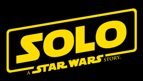
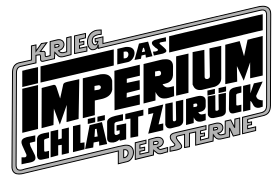

Horizontal Timeline →
of →
Star Wars →
Achtung!!
Star Wars beginnt nicht ab Episode 1 sondern hat eine sehr interessante aber auch noch unaufgeklärte Vergangenheit. Bei der aktuellen Timeline handelt es sich um die bekannte Story sprich alle Filme, Serien, usw.
Episode 1
32 v. Yavin
Episode 2
22 v. Yavin
Star Wars the Clone Wars
22 - 19 v. Yavin
Episode 3
19 v. Yavin
Solo: A Star Wars Story
13 - 10 v. Yavin

Star Wars Rebels
5-1 v. Yavin
Rogue One: A Star Wars Story
0 v. Yavin
Episode 4
0 v.Yavin bzw. 0 n.Yavin
Episode 5
3 n. Yavin

Episode 6
4 n. Yavin
The Mandalorian
10 n. Yavin
Episode VII: Das Erwachen der Macht
34 n. Yavin
Episode VIII: Die letzten Jedi
34 n. Yavin
Episode IX: Der Aufstieg Skywalkers
35 n. Yavin